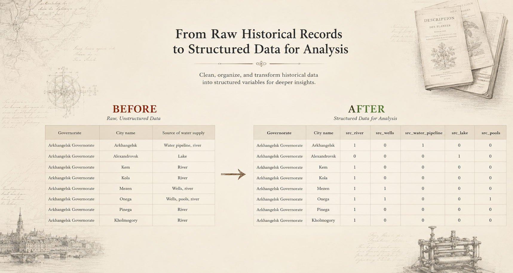
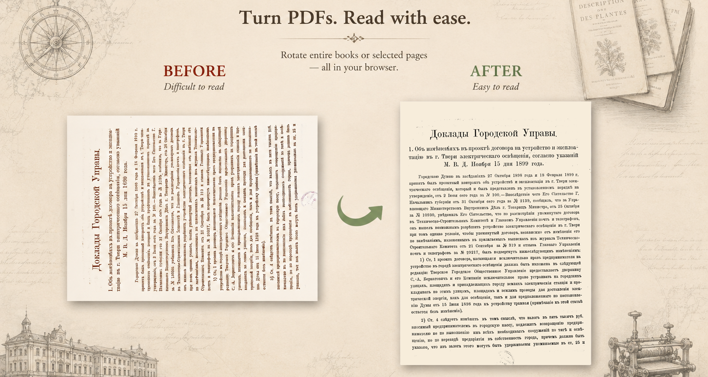
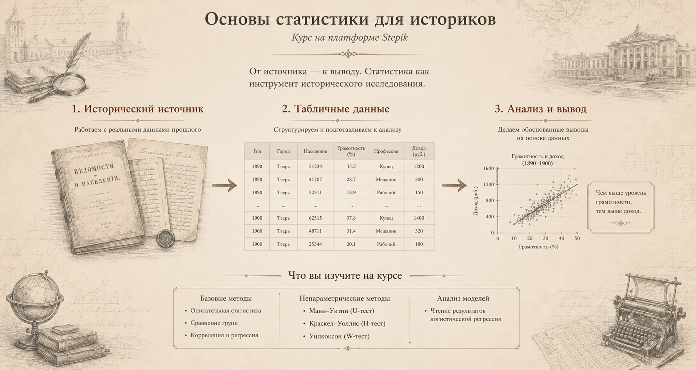

Инструменты и обучениеTools & training
Инструменты и обучение для работы с историческими источниками и даннымиTools and training for working with historical sources and data
В ходе работы над данными о 950 городах Российской империи я создала инструменты, которых не хватало для анализа. Теперь это бесплатные браузерные сервисы и практический курс по количественным методам для гуманитариев.While working on data for 950 cities of the Russian Empire, I built the tools I had been missing. They are now free browser-based services and a practical course on quantitative methods for the humanities.
Датасет на Zenodo · 950 городов · Инструменты работают прямо в браузереDataset on Zenodo · 950 cities · Tools run right in your browser

Codebook & Survey Tidier БесплатноFree
Инструмент помогает подготовить табличные данные к количественному анализу.A tool that prepares tabular data for quantitative analysis.
Подробнее - чем инструмент полезен историкуMore - why historians use it
Исследователи, работающие с анкетами и массовыми источниками, тратят часы на ручную рутину: привести длинные вопросы (имена переменных) к аккуратным названиям, разнести список текстовых переменных в бинарные переменные 0/1 (см. изображение выше), посчитать пропуски, найти ошибки кодировки, создать Codebook. Сервис делает это за секунды - и сразу готовит файлы для SPSS и jamovi, а также машиночитаемые метаданные (Tabular Data Package) для публикации данных по принципам FAIR (Zenodo и другие репозитории).
Всё обрабатывается прямо в вашем браузере: файлы не загружаются ни на сервер, ни автору - это важно, когда в документе есть персональные или чувствительные ответы. Работает с данными на любом языке, значения в кодбуке показываются в родном алфавите.
Researchers working with surveys and mass sources spend hours on manual routine: turning long survey questions into concise variable names, splitting "select all that apply" into 0/1 binary variables, counting missing values, catching coding errors, building a codebook. The tool does this in seconds - and immediately prepares files for SPSS and jamovi, plus machine-readable metadata (Tabular Data Package) for preparing datasets for publication in line with FAIR principles, including on Zenodo and other repositories.
Everything is processed right in your browser: files are never uploaded to a server or shared with the author - important when the dataset contains personal or sensitive responses. It works with data in any language, and codebook values are shown in their original script.

TurnPDF БесплатноFree
Поворот страниц PDF прямо в браузере - для «боком» сохранённых сканов.Rotate PDF pages right in the browser - ideal for scans saved sideways.
Подробнее - чем инструмент полезен историкуMore - why historians use it
Инструмент полезен тем, кто работает со сканами в PDF, где страницы сохранены боком или вверх ногами. TurnPDF решает это в пару кликов: загрузили многостраничный скан, повернули нужные страницы на 90° или 180°, скачали исправленный файл.
Ничего не нужно устанавливать, файлы остаются на вашем компьютере. Удобно готовить сканы к чтению, распознаванию или подготовке иллюстраций и приложений к статье. Переворачивать страницы можно как во всём документе сразу, так и только в нужной части документа, указав диапазон страниц.
Useful for anyone working with PDF scans where pages are saved sideways or upside down. TurnPDF fixes this in a couple of clicks: upload a multi-page scan, rotate the pages you need by 90° or 180°, download the corrected file.
Nothing to install, and files stay on your computer. Handy for preparing scans for reading, OCR, or figures and appendices for an article. You can rotate the whole document at once or just selected pages.

Основы статистики для историковBasics of Statistics for Historians (in Russian)
Количественные методы для гуманитариев - без формул и без страха.Quantitative methods for the humanities - without formulas or fear.
Подробнее - чем курс полезен историкуMore - what the course gives you
Практический курс поможет пройти весь путь исследования: превратить источник в корректную базу данных, выбрать подходящий метод, посчитать его в бесплатной программе jamovi и оформить методологический раздел. Без формул, программирования и платных программ.
Все примеры выросли из реальных исторических исследований, но методы одинаково работают в социологии, филологии, культурологии. К курсу прилагаются учебный датасет, кодбук, справочники «какой метод выбрать» и шаблоны методраздела. Сейчас - со скидкой к новому учебному году.
A practical course that walks you through the whole research cycle: turn historical material into a clean, analysis-ready dataset, choose the right method, run it in the free program jamovi, and write up the methodology section. No formulas, no programming, no paid software. The course is taught in Russian.
All examples are drawn from real historical research, but the methods work just as well in sociology, philology and cultural studies. The course comes with a teaching dataset, a codebook, "which method to choose" guides and methodology templates.
Бесплатный гид: как выбрать статистический метод →Free guide: how to choose a statistical method →
В разработке - по запросуIn development - on request
Распознавание и правка дореволюционных текстовOCR and editing of pre-revolutionary texts
ИИ-инструменты, которые распознают текст с фото и сканов дореволюционных и современных изданий и приводят дореволюционную орфографию к современной. Пока доступны по индивидуальному запросу - как услуга.AI tools that recognize text from photos and scans of pre-revolutionary and modern editions and convert pre-revolutionary orthography into modern Russian spelling. Currently available on individual request - as a service.
Написать авторуContact the author